Yolanda Relief Operations:
The Typhoon Yolanda brought heavy destruction upon central Visayas as the internationally acclaimed most powerful typhoon ever recorded for the year came to land in Philippine borders. Houses and buildings were brought down by the strong gusts of the wind and the strength of the heavy downpour and it was recorded that it took not just one night for the storm to pass on to the cities at central Visayas
and some cities along the eastern and western coasts of Visayas. We knew the victims lost many of their hard-earned belongings not to mention the fact the number of dead people kept rising in every day and more and more missing people are reported to the patrol units at Visayas. The government leading the people seemed to lost all hope also as "State of Calamity" had been declared to many states in Visayas affected by the typhoon.
MANILA, Philippines, It will take years for Yolanda (Haiyan) survivors to regain the quality of life they had prior to the disaster. Now, more than 100 days since, survivors are slowly starting to get back on their feet.
The World Food Programme (WFP) is one of the many humanitarian organizations helping survivors rebuild their lives. They have been providing emergency food and nutrition assistance in the days immediately following the disaster and have now begun to move on to long-term recovery.
Liliana Florendo and Procopio Medina are 2 out of the 2.8 million who have received food supplies from the WFP.
These are their stories:
Liliana
The WFP first met Liliana almost a month after the storm hit a food distribution point in the Tanauan Apostolic Church of Leyte. The 48-year-old mother survived the storm surges and record-breaking winds by evacuating along with her family to the Tanauan School of Craftmanship and Home Industry. 200 people from her coastal barangay of Sta Cruz, however, perished.
The 3 days before the first batch of relief goods arrived were unbearable according to Liliana. "I could not help but cry. Hunger, the stench of sweat, it was all there."
A palm liquor vendor, the damage to the coconut trees in Leyte brought by Yolanda left her jobless. Her husband, left to be the only breadwinner in the family, makes whatever he can as a pedicab driver.
During that month after the typhoon, the future remained unsure in the eyes of Liliana. What she did know was that rebuilding her home and gathering some basic supplies to put a roof over their head was her top priority.
More than 100 days since Yolanda, the WFP revisited Liliana at the construction site of her house.
While the house is still under construction she is living with her husband and 78-year-old mother in a small structure with tarpaulin walls. Her two children are living with relatives in the town because it is closer to their school.
"Some families have left, but most are back, and trying to rebuild, like us," said Liliana.
With the help of the local government, other aid organizations, and even debris brought by the typhoon, they were provided with some building materials. More materials are needed and it will take awhile until they save money needed to purchase what they need.
"In the first weeks and months, we could not have survived without the rice from WFP," recounted Liliana.
Now at least the roads are cleared and her husband is making enough money driving his pedicab to feed them.
"Now we can buy rice and fish, and once a week we eat meat. And we look towards the future." Liliana said.
When the construction of their new house is finished they will have their children back home and they plan to open up a small store on top of a little corner of what remains of their old home.
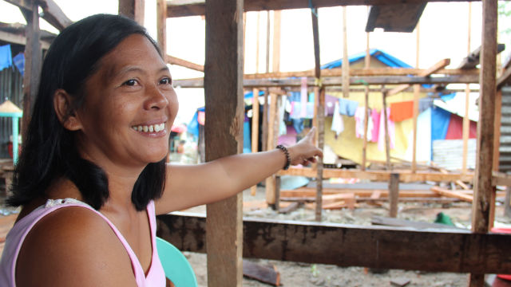
Liliana
Procopio
Amidst the makeshift homes in Barangay 70 in Rawis, 15 meters up a steep slope, a concrete building, beaten up but firmly rooted, stands out. This is the structure that 54 year old Procopio Molina and his family ran to, in search of shelter during the onslaught of Yolanda.
"We holed ourselves up there for 5 hours, waiting for the water to recede," recalled Procopio.
Almost a month after the storm, Procopio was first encountered by the WFP waiting to receive 5 kilos of rice in exchange for participating in their cash-for-work program. From 8 am to 4 pm Procopio and others from his town cleared rocks that were washed ashore during the storm.
Thankful for the rice and the opportunity, Procopio said with resolve, "I just want to go back to work."
Before Yolanda, he was working as a truck driver for a company in Tacloban City.
More than 100 days after, his costal barangay just 20 minutes away from the city was scattered with makeshift shelters standing in stark contrast next to huge container ships that were washed inland during the storm and were left stranded.
Procopio, his wife Teresita, and their two daughters are now living in a 5-square-meter space behind a neighbor's shop.
"We got rice from the WFP and food from the government," said Procopio, adding that without this help, they would not have been able to survive since there were no other means to acquire food.
Still working for the same company but no longer driving, Procopio and the other employees are now being paid to clean and repair the company's warehouse, which was looted during the panic-stricken days after the typhoon. This job however, will only last till April since the company, unable to recover from the losses incurred by the typhoon, is closing.
He is confident though that he will be able to save enough money to rent a jeepney and start driving again. He is also looking forward to next year when his younger daughter Marites will move on to high school and his eldest Marilyn will graduate.
"I will earn enough to support us and rebuild our house," Procopio said optimistically.
Liliana and Procopio are examples of survivors whose lives have been turned upside down after Yolanda unforgivingly unleashed her wrath. The road to recovery is still a long ways ahead but with the help from the government and humanitarian community, more than 100 days since Yolanda, they remain hopeful about the future and their spirits are intact.
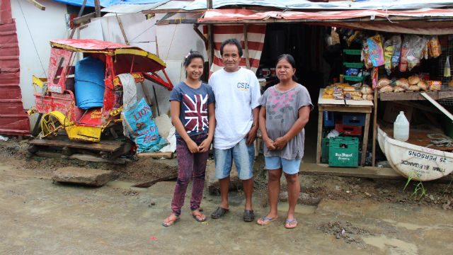
Procopio
Images of Yolanda After - Events
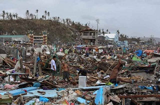
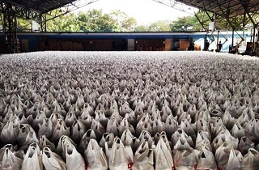
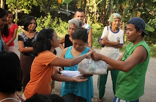
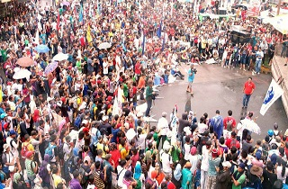
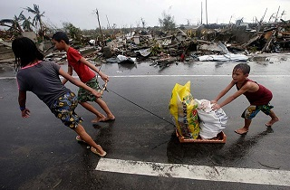
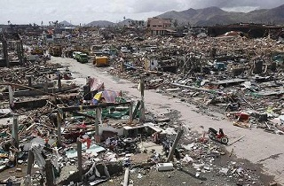
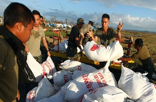
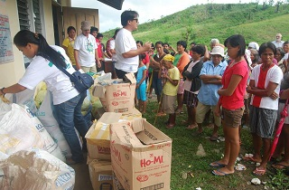
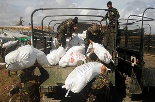